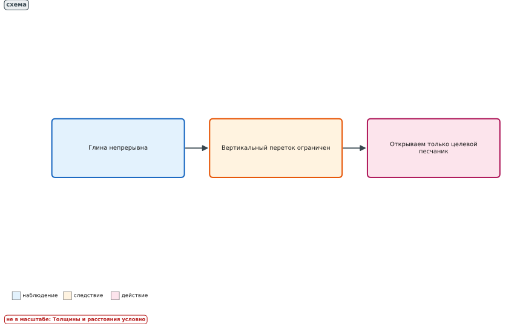
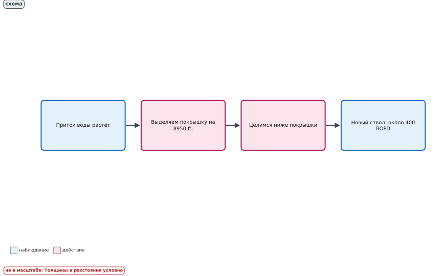

Её положение помогает выбрать интервал перфорации или цель для бокового ствола.
Пороговая идея. Глина в одном месте разделяет потоки, но в другом тот же слой может исчезнуть. модель
Интерактив: как это происходит


1 / 6
Проверяем, не прерывается ли глинистый слой.
Не в масштабе: Толщины и расстояния (условно). Допущения: Геометрия и шкалы, если есть, условные; схема не оцифрована из книги..
Как это работает
Механизм
Одни глинистые пласты непрерывны на площади больше масштаба сетки скважин. Другие прерываются из-за размыва вышележащим песчаником или выклинивания. Непрерывные глины препятствуют вертикальному перетоку и направляют воду при заводнении. стр. 418
«areas larger than that of the well spacing, but other shales are less continuous because of erosion by an overlying sandstone or by stratigraphic pinch-out (Fig. 9.20)»
«Continuous shales create vertical flow barriers and help to focus a waterflood»
схема
Воды становится больше → Проверяем покрышку → Бурим в песок ниже.
Класс B · схема · нарисовано кодом · стр. 418
Как это видно
перфорация: Отверстия, создающие связь между скважиной и выбранным пластом. Перфорация только дельтовых песчаников устранила их конкуренцию за воду с более проницаемыми речными песчаниками выше. стр. 418
«By restricting perforations in horizontal wells to deltaic sandstones, developers avoided competition for water between these lower-permeability sandstones and overlying higher-permeability fluvial sandstones (Figs. 9.21 and 9.22) (Tye et al., 1999)»
Практика
Вертикальная скважина стабильно давала свыше 300 BOPD с мая 1992 по январь 1993. Рост притока воды указывал на вероятное сильное снижение добычи нефти в будущем. стр. 418
«One innovative application of the understanding of shale continuity was applied to a vertical well that had maintained a steady output in excess of 300 BOPD between May 1992 and January 1993»
«During that time, water production increased, indicating that oil production in that well would decline considerably over time (Fig. 9.23)»
Условия
На глубине 8950 ft. выделили покрышку. Автор предположил, что под ней могла сохраниться нефть в дельтовом песчанике. В этот песчаник пробурили горизонтальный боковой ствол, давший примерно 400 BOPD. стр. 418–419
«A shale interval at 8950 ft. was mapped as a sealing shale, which suggests that oil might be trapped in an underlying deltaic sandstone»
«well was drilled as an unconventional completion into the sandstone, and it led to new production of approximately 400 BOPD (Fig. 9.23)»
По шагам
Как действовали в примере
Отметить увеличение притока воды. стр. 418
Выделить покрышку на 8950 ft. и проверить предположение о песчанике под ней. стр. 418
Пробурить боковой ствол в целевой песчаник. стр. 419
Разбор примеров из книги по книге
Как обойти растущий приток воды стр. 417
Условие. Вертикальная скважина давала свыше 300 BOPD, но воды становилось больше.
Выделить по разрезу покрышку на 8950 ft.
Проверить предположение бурением бокового горизонтального ствола в песчаник под покрышкой.
Итог. Новый ствол дал примерно 400 BOPD в этом примере.
Её положение помогает выбрать интервал перфорации или цель для бокового ствола.
Потренируйтесь
Дано: Где ожидали найти оставшуюся нефть? (Пример из учебного узла)
Автор сформулировал и проверил гипотезу о песке ниже покрышки.
Цифры и условия
Одни глинистые пласты непрерывны на площади больше масштаба сетки скважин. Другие прерываются из-за размыва вышележащим песчаником или выклинивания. стр. 418
Вертикальная скважина стабильно давала свыше 300 BOPD с мая 1992 по январь 1993. стр. 418
На глубине 8950 ft. выделили покрышку. Автор предположил, что под ней могла сохраниться нефть в дельтовом песчанике. стр. 418
В этот песчаник пробурили горизонтальный боковой ствол, давший примерно 400 BOPD. стр. 419
Что это значит для данных по книге
Ограничивают перфорацию нужным интервалом и проверяют глинистую покрышку, прежде чем целиться боковым стволом в песок под ней.
Вход
Вертикальная скважина давала свыше 300 BOPD, но воды становилось больше.
Выход
В этот песчаник пробурили горизонтальный боковой ствол, давший примерно 400 BOPD.
Где ломается
Глинистую породу нужно не только обнаружить, но и проверить её непрерывность. Предположение о нефти под глиной в примере проверили бурением.
Где здесь ручной труд специалиста
Входные данные
Вертикальная скважина давала свыше 300 BOPD, но воды становилось больше.
Ручные шаги
Ограничивают перфорацию нужным интервалом и проверяют глинистую покрышку, прежде чем целиться боковым стволом в песок под ней.
Точки суждения
Глинистую породу нужно не только обнаружить, но и проверить её непрерывность. Предположение о нефти под глиной в примере проверили бурением.
Время
Глава не оценивает трудозатраты; время зависит от объёма проверки и качества исходных наблюдений.
Типичные ошибки
Перенести наблюдение из конкретного примера на всё месторождение без проверки.
Аналогия модель
Изоляция соседних маршрутов работает только пока разделитель непрерывен.
Где аналогия перестаёт работать: Естественный барьер может прерываться незаметно между измерениями.
Новые понятия
заводнение (waterflood)
Закачка воды для вытеснения нефти стр. 418модель
перфорация (perforation)
Отверстия, создающие связь между скважиной и выбранным пластом стр. 418модель
Все утверждения шага с дословной цитатой автора и страницей книги (по PDF).
Одни глинистые пласты непрерывны на площади больше масштаба сетки скважин; другие прерываются из-за размыва вышележащим песчаником или выклинивания. наблюдение
«areas larger than that of the well spacing, but other shales are less continuous because of erosion by an overlying sandstone or by stratigraphic pinch-out (Fig. 9.20)»
Непрерывные глины препятствуют вертикальному перетоку и направляют воду при заводнении. наблюдение
«Continuous shales create vertical flow barriers and help to focus a waterflood»
Перфорация только дельтовых песчаников устранила их конкуренцию за воду с более проницаемыми речными песчаниками выше. наблюдение
«By restricting perforations in horizontal wells to deltaic sandstones, developers avoided competition for water between these lower-permeability sandstones and overlying higher-permeability fluvial sandstones (Figs. 9.21 and 9.22) (Tye et al., 1999)»
Вертикальная скважина стабильно давала свыше 300 BOPD с мая 1992 по январь 1993. наблюдение
«One innovative application of the understanding of shale continuity was applied to a vertical well that had maintained a steady output in excess of 300 BOPD between May 1992 and January 1993»
Рост притока воды указывал на вероятное сильное снижение добычи нефти в будущем. вывод
«During that time, water production increased, indicating that oil production in that well would decline considerably over time (Fig. 9.23)»
На глубине 8950 ft. выделили покрышку: под ней могла сохраниться нефть в дельтовом песчанике. вывод
«A shale interval at 8950 ft. was mapped as a sealing shale, which suggests that oil might be trapped in an underlying deltaic sandstone»
В этот песчаник пробурили горизонтальный боковой ствол, давший примерно 400 BOPD. наблюдение
«well was drilled as an unconventional completion into the sandstone, and it led to new production of approximately 400 BOPD (Fig. 9.23)»
Исходный текст урока
Стр. 417 · 9.4.2 Reservoir Example: Prudhoe Bay Field
Shales also were found to be particularly important to production and fluid flow in Prudhoe Bay field's deltaic facies. Some shales are continuous over areas larger than that of the well spacing, but other shales are less continuous because of erosion by an overlying sandstone or by stratigraphic pinch-out (Fig. 9.20). Continuous shales create vertical flow barriers and help to focus a waterflood. By restricting perforations in horizontal wells to deltaic sandstones, developers avoided competition for water between these lower-permeability sandstones and overlying higher-permeability fluvial sandstones (Figs. 9.21 and 9.22) (Tye et al., 1999). One innovative application of the understanding of shale continuity was applied to a vertical well that had maintained a steady output in excess of 300 BOPD between May 1992 and January 1993. During that time, water production increased, indicating that oil production in that well would decline
Стр. 417 · 9.4.2 Reservoir Example: Prudhoe Bay Field
considerably over time (Fig. 9.23). A shale interval at 8950 ft. was mapped as a sealing shale, which suggests that oil might be trapped in an underlying deltaic sandstone. A sidetrack horizontal well was drilled as an unconventional completion into the sandstone, and it led to new production of approximately 400 BOPD (Fig. 9.23).